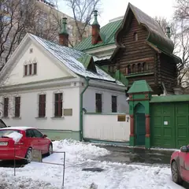

Баня · ЦАО
Астраханские бани
Баня старой школы у «Проспекта Мира»: русская парная и купель — 1 600 ₽ за 2 часа, для компании до 6 человек есть отдельные номера. Пн — санитарный день.
- ₽ · до 1 500 ₽ на человека
- Новое в каталоге
- в 1 плане
Позвать сюда: Астраханские баниОткрыть в каталоге: Астраханские баниМаршрут до места: Астраханские бани
Адрес и детали
- Адрес
- Астраханский пер., 5, стр. 3
Открыть на Яндекс Картах (в новой вкладке) - Метро
- м. Проспект Мира
- Округ
- Центр (ЦАО)
- Цена
- до 1 500 ₽ на человека
- Часы работы
- вт–вс 08:00–22:00 · проверили в октябре 2026
- Телефон
- +7 (495) 680-43-29
- Проверено
- работает — проверили в октябре 2026
Планы с этим местом 1
- Астраханские бани · Баня · м. Проспект Мира
- 7 минут пешкомЗолотая вобла · Пивной бар
Русская парная и купель в Астраханских банях — 1 600 ₽ за два часа, — а потом минут семь пешком до «Золотой воблы»: кожаные диваны, большой зал и пиво.
Открыть план: Баня старой школы и «Вобла»Позвать сюда: Баня старой школы и «Вобла»
Входит в подборки
Похожие рядом


Что ещё рядом
 Аптекарский огородБотанический сад · ≈ 5 минут пешком
Аптекарский огородБотанический сад · ≈ 5 минут пешком- Золотая воблаПивной бар · ≈ 7 минут пешком

Дом-музей ВаснецоваМузей · ≈ 16 минут пешком- РассольниковРесторан русской кухни · ≈ 16 минут пешком
- Московский стендап клуб (Comedy 34)Стендап-клуб · ≈ 17 минут пешком
- BlushВинный бар · ≈ 18 минут пешком
Как позвать
- Выбери план, место или событие — в карточке адрес, цены и маршрут в Яндекс Картах.
- Нажми «Позвать сюда» — соберётся приглашение-игра для свидания или голосование для компании.
- Отправь ссылку в любой мессенджер: тебе ответят, а компания отметит, куда и когда может. Бесплатно и без регистрации.